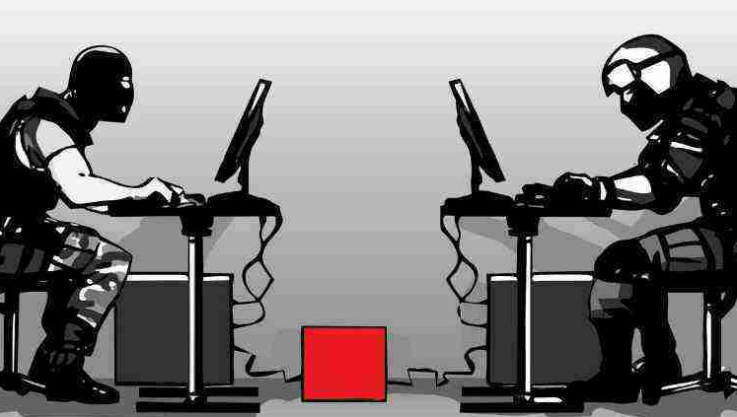
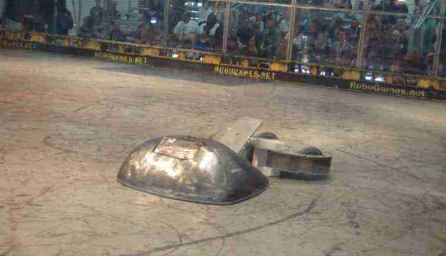
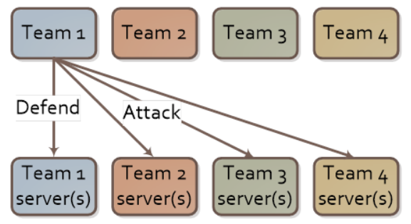
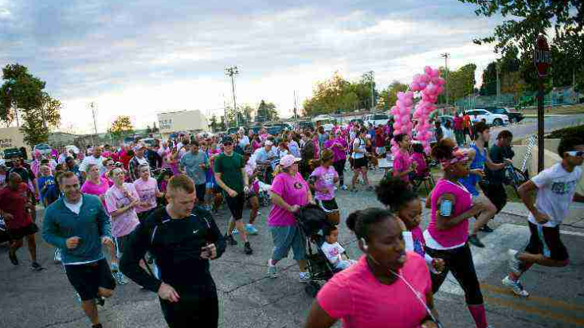
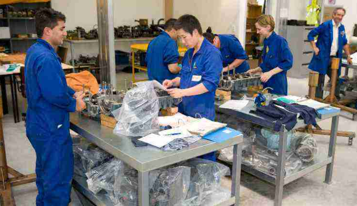

Hello everyone!! Amrita Tech Fest has a lot of fun and exciting activities each year and this year too we will have many new events.
Come and see the events that are prepared for you all to participate and enjoy.
LAN GAMING

Nowadays many institutes, especially the management colleges, hold this LAN Game in their fest. Also, a popular youth TV
channel holds LAN Gaming. This could be interesting for the new Gamers. In LAN gaming, you have to compete with other team
and beat them for a win. This can be either in a group or between two players. There are a series of rounds in which the players
with the highest score will be the winner. Several institutes can participate either as a team or an individual. LAN gaming sounds
interesting for new generations.
ROBO GAMES

Apart from LAN Gaming, Robo games is another event that growing popular in the college fest and events by the new generation.
There are several events like Robo War, Rober Soccer, Robo Kadabbi etc, where students from other institution also participate
and compete with each other. Students usually made the Robot and its skills are tested against the competition to each other.
STORY WRITING
Here all the participants will be given a few lines and they have to form a whole story of around 2000 to 3000 words. The genre can
be different, from same lines the story can be horror, romance, comedy and tragedy and the judge will decide whose story has created
an impact on the mind. Regardless of stream, any students with the enthusiast in reading and writing can participate in this competition.
ATTACK AND DEFENSE

An Attack/Defense Capture the Flag is a type of cybersecurity competition where competing teams attempt to find security vulnerabilities in
services run by the opposing teams. Each team works finding vulnerabilities in other team’s services while protecting their own, hence “attack/defense”.
DEBUGGING
A great event and competition to organize for the future programmers where several institutes can come together and compete with the
student of other institution. It involves problem-solving and algorithmic thinking of the students. The students will involve in
problem-solving or debugging. The students participating in the competition will be given time to solve the maximum errors in limited time.
IT QUIZ
IT Quiz can be arranged for students to increase their technical knowledge. Here also the several colleges and institutions can come and
form a team and compete with each other. The mentor will prepare a set of questions for the participants and the participants of the team
with the highest score can be the winner. This could be actually fun as well as productive for the students to increase their knowledge.
DEBATE
Debate on certain topics on various issues can be included in the fest. It is not only fun, but also informative along with brainstorming for
the students. This can be made innovate like Model United Nation or the Youth Parliament during the fest where student discusses issues and
policies of the government. These can be arranged as a team or as individuals from different institutions.
AWARENESS

This can be useful for college students as well as the general public. During the fest, a group of students can visit some area and spread
awareness about various topic related to a social issue, sanitation, government policies, environment etc. Or can be of traffic or pollution
in urban areas. This may not be a competition or event, but can be really useful as students get some time to involve in social issues during fest days.
Engineering

There are several events which can be organised in Engineering colleges or institution for the students. This is also fun and productive.
Nowadays college arranging several events related to a different field of engineering. like mechanical engineering, electrical engineering,
civil engineering, IT, electronics, biotechnology and the modelling, coding and innovation, building, designing, cracking are based on respective fields.
And many more exciting events are waiting for you here at Anokha for you. Come join us and have fun!!